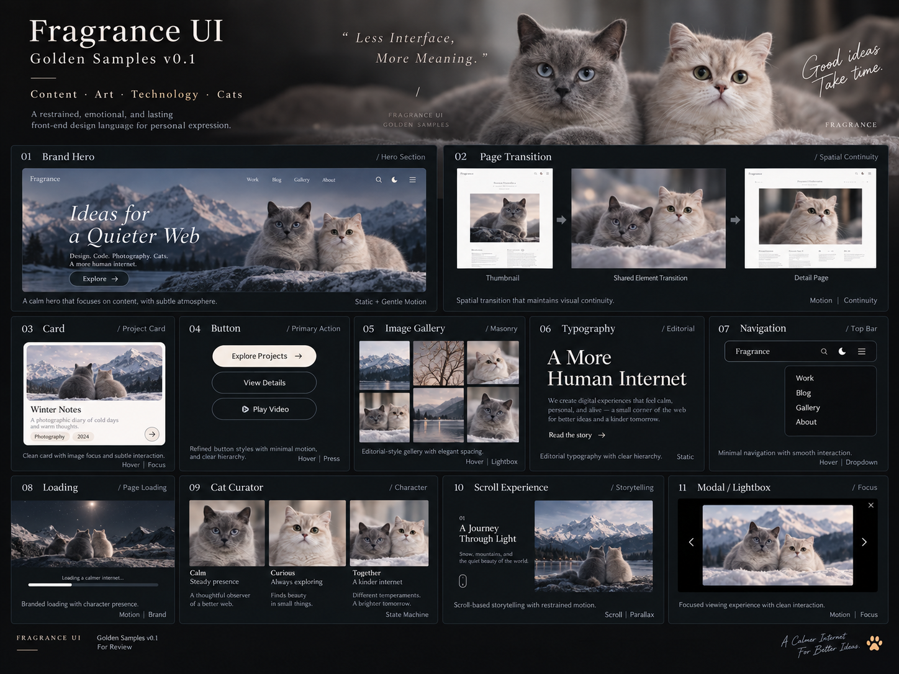
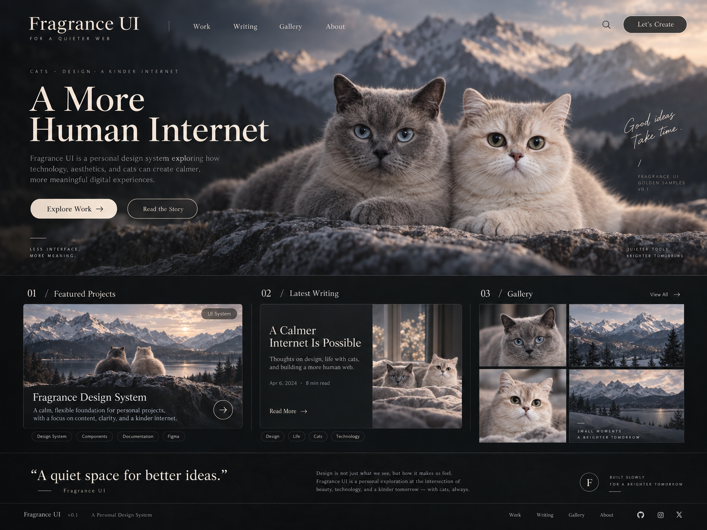
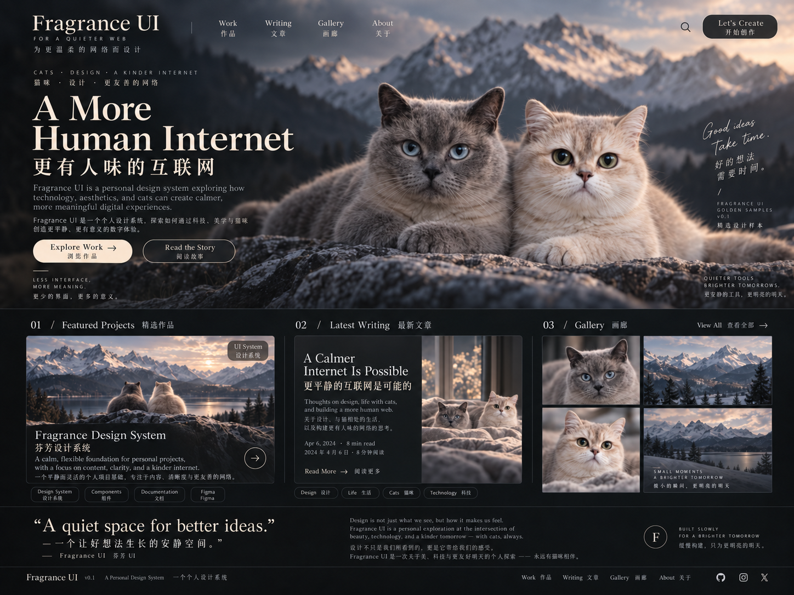
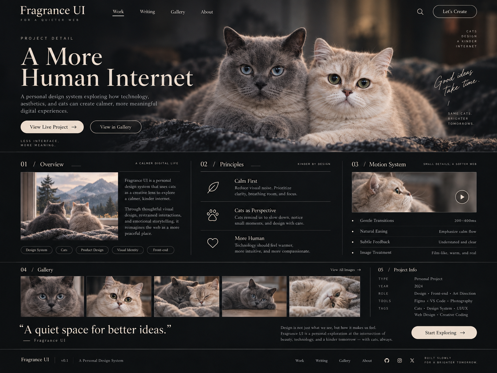
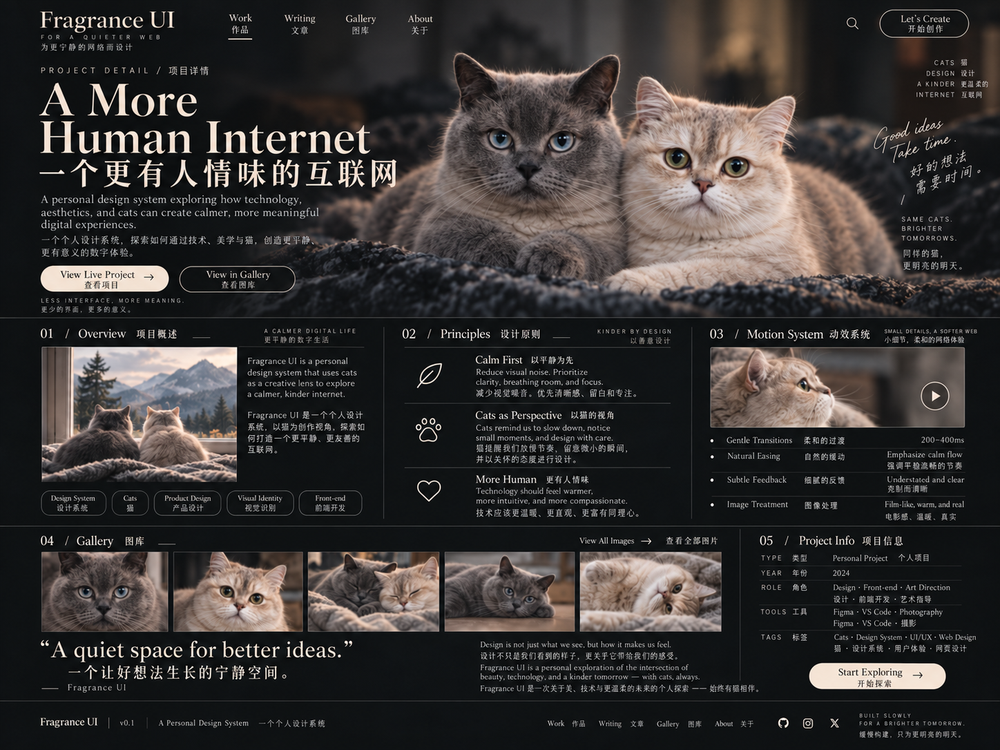
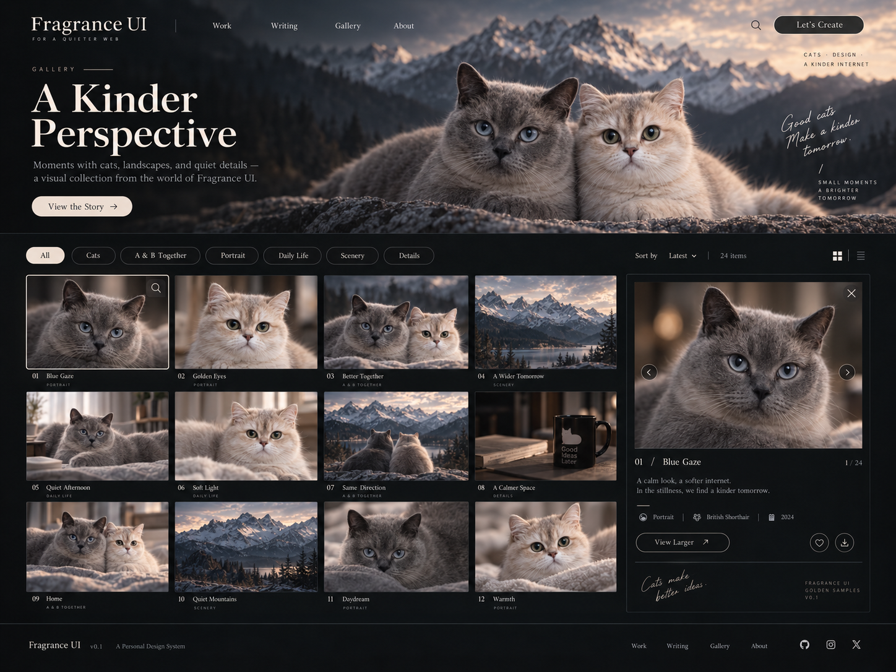
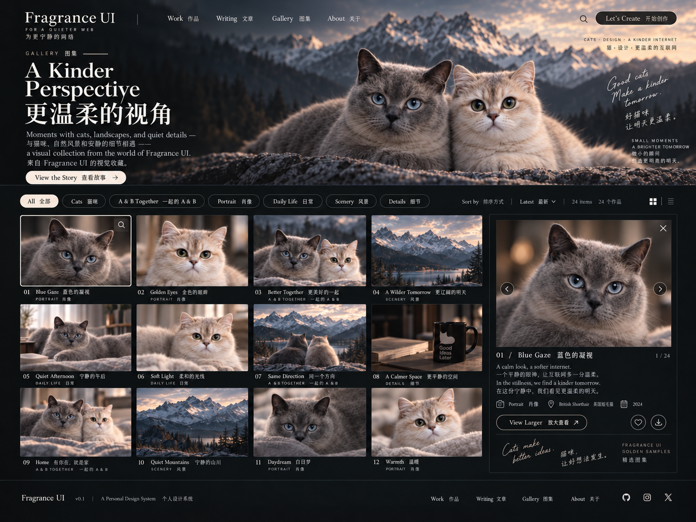
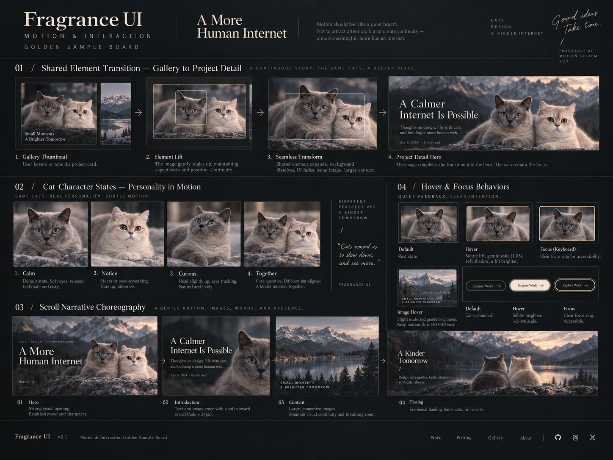
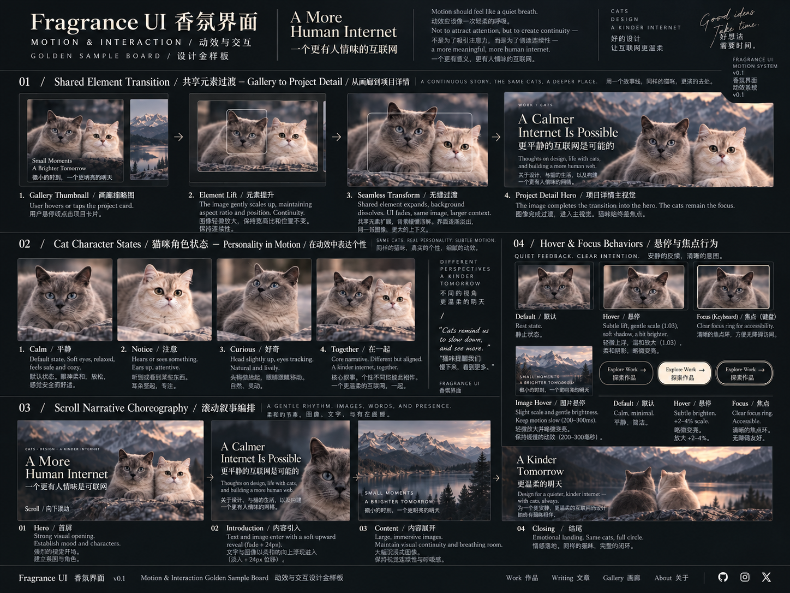

Fragrance UI · Golden Sample Review v0.1
9 张方向样板（非最终稿）。逐张看完回答下面 6 个问题，回复即冻结 v0.2。
规则全文：DESIGN.md ·
金样本指南 ·
Motion 分镜 ·
改造草案
Review · 6 Questions
- Editorial / Artistic / Technical / Restrained 四气质是否成立？
- 双猫作为「角色」而非装饰 mascot——确认？
- 暗色、低饱和、暖灰、摄影/艺术主导的视觉基准是否正确？
- 技术感要再强一点，还是摄影杂志感再降一点？
- Motion 路线（Scene Choreography + Shared Continuity + Character State Machine）认可？
- 中英文「同权但不逐字镜像」策略认可？
Samples








